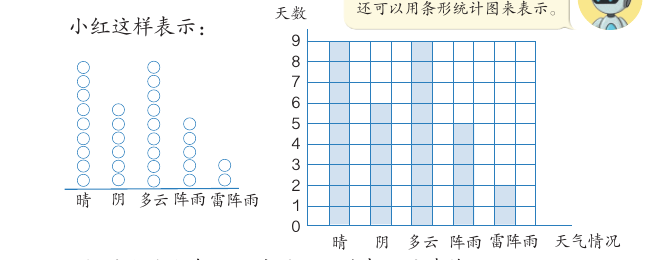
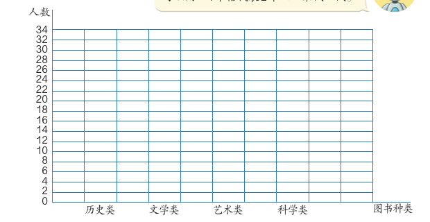
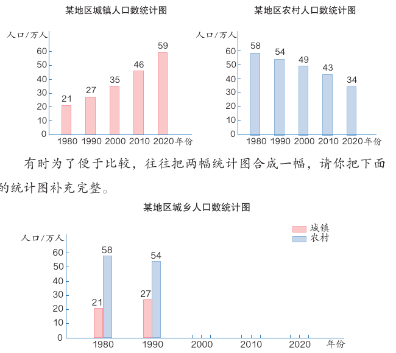
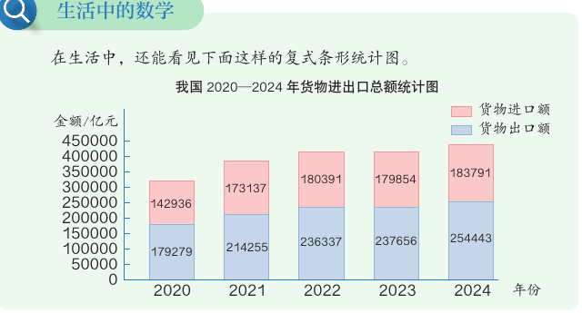

条形统计图
A 市 8 月有几天晴、几天阴？用一根根直条画出来，多少一眼就能看清。这一课学画条形统计图、选“一格代表几”，再学把两组数据画在一幅图里比较。
学完本课，你能够：
01统计表和条形统计图
先说结论：同一组数据，可以用统计表表示，也可以用条形统计图表示。统计表能查到准确的数，条形统计图能一眼看出多少。
教材的例子是 A 市 8 月的天气。这个月每种天气各有多少天？小东用统计表表示：
| 天气情况 | 晴 | 阴 | 多云 | 阵雨 | 雷阵雨 |
|---|---|---|---|---|---|
| 天数 | 9 | 6 | 9 | 5 | 2 |
小红用一个个圆圈表示，一个圆圈代表 1 天。还可以用条形统计图来表示：

教材请你想一想：小红的方法和条形统计图，哪种表示更清楚？条形统计图和统计表各有什么特点？
统计表
每一项的数量写得清清楚楚，查数方便。
条形统计图
直条越长，数量越多。哪项最多、哪项最少，一眼就能看出来。
画条形统计图时，要写清楚两条轴各表示什么。例如横着写“天气情况”，竖着写“天数”。
02一格代表几
先说结论：数据比较大时，1 格不一定代表 1。先看数据有多大，再定每格代表几。
教材第 90 页统计了四年级同学最喜欢的图书。历史类 12 人，文学类 28 人，艺术类 16 人，科学类 32 人。

数据来自教材第 90、91、94 页。“格子太多”“直条太矮”的提醒是课程作者为了帮助比较设的简单标准，不是教材规定。
- 最喜欢艺术类图书的如果有 17 人，1 格代表 2 人时，可以用半格代表 1 人（教材第 90 页）。
- 四（3）班捐书 20、30、50、40、30 本，教材问：每格代表几本书合适？（教材第 91 页）
- 平均寿命 23 年，在“每格代表 5 年”和“每格代表 10 年”两幅图中，哪幅表示比较准确？（教材第 94 页）
03横着画，读出信息
先说结论：条形统计图的直条可以竖着画，也可以横着画。画好以后，要会从图里读出信息，再提出建议或预测。
教材第 92 页的“上学方式”和第 94 页的“动物平均寿命”，直条都是横着画的。第 93 页是某商场一星期电视机的销售量：
| 时间 | 星期一 | 星期二 | 星期三 | 星期四 | 星期五 | 星期六 | 星期日 |
|---|---|---|---|---|---|---|---|
| 销售量 / 台 | 15 | 10 | 20 | 25 | 30 | 50 | 45 |
数据来自教材第 88、93、94 页。
04复式条形统计图
先说结论：有时为了便于比较，往往把两幅统计图合成一幅。这样的统计图叫复式条形统计图，它用图例说明每种颜色表示什么。

| 年份 | 1980 | 1990 | 2000 | 2010 | 2020 |
|---|---|---|---|---|---|
| 城镇人口 / 万人 | 21 | 27 | 35 | 46 | 59 |
| 农村人口 / 万人 | 58 | 54 | 49 | 43 | 34 |
数据来自教材第 96、97 页。颜色照教材：城镇粉色、农村蓝色；男生蓝色、女生粉色。
教材请你比一比：复式条形统计图和单式条形统计图有什么区别？然后回答几个问题。哪一年城镇人口数最多？哪一年农村人口数最少？哪一年城乡人口数相差的数量最大、哪一年最小？你还能得到哪些信息？
05生活中的条形统计图
先说结论：报纸、网站上常常用复式条形统计图表示大数据。读图时，先看标题、图例和单位。

这幅图的样子和例 3 不一样：每一年的两种直条上下接在一起。蓝色是货物出口额，粉色是货物进口额。例如 2024 年，出口额是 254443 亿元，进口额是 183791 亿元。
练习十九里还有更多生活中的复式条形统计图：
- A、B 两个社区某月垃圾分类情况（教材第 99 页），直条横着画。
- 四年级学生一分钟跳绳成绩（教材第 100 页）。
- 我国 2018—2023 年固定电话和移动电话用户数（教材第 100 页）。
- 我国 2025 年 9—12 月核能、风力、太阳能发电量（教材第 101 页），一幅图里有三种颜色。
06自测与速记
速记表
| 要点 | 一句话 |
|---|---|
| 统计表 | 数写得准确，查数方便 |
| 条形统计图 | 直条越长数量越多，更直观；可以竖着画，也可以横着画 |
| 一格代表几 | 数据大时 1 格可以代表 2、5、10……；不够一格时可以用半格 |
| 复式条形统计图 | 两组数据合成一幅图，便于比较；一定要有图例 |
| 读图 | 先看标题、图例、单位，再比最多、最少、相差多少，最后提建议 |
相关课程
教材：人教版《数学》四年级上册（2022 课标修订版）第六单元“条形统计图”第 88–101 页。标为“补充”的内容和模拟演示是课程作者的解释，不是教材原文。